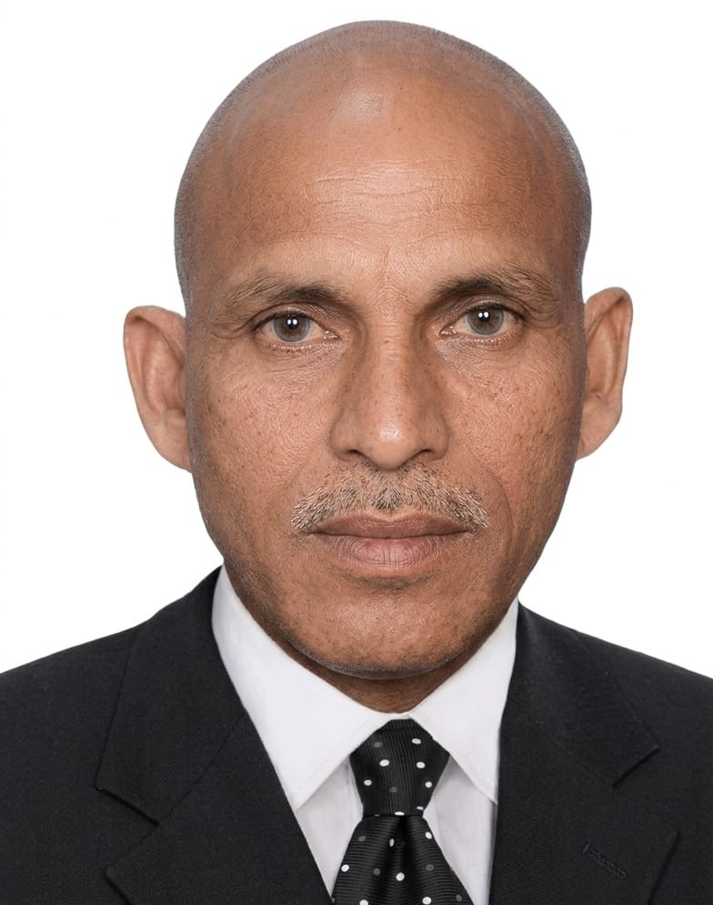

📚
गुणवत्तापूर्ण शिक्षा
बुनियादी समझ, नियमित अध्ययन और सीखने की रुचि विकसित करने पर ध्यान।
घनश्याम प्रसाद चौकरया विद्या मंदिर, सरखड़ी में आपका स्वागत है। Nursery से कक्षा 8 तक हिंदी एवं अंग्रेजी माध्यम में शिक्षा।

हमारा उद्देश्य विद्यार्थियों को गुणवत्तापूर्ण शिक्षा के साथ अनुशासन, आत्मविश्वास, रचनात्मकता और नैतिक मूल्यों से समृद्ध करना है। विद्यालय में सीखने के लिए सकारात्मक एवं सहयोगी वातावरण विकसित करने का प्रयास किया जाता है।
विद्यालय के बारे में जानेंविद्यार्थियों के सर्वांगीण विकास के लिए सीखने का सकारात्मक वातावरण।
बुनियादी समझ, नियमित अध्ययन और सीखने की रुचि विकसित करने पर ध्यान।
शैक्षणिक गतिविधियों के साथ खेल, रचनात्मकता और व्यक्तित्व विकास।
सम्मान, सहयोग, जिम्मेदारी और सकारात्मक सोच जैसे मूल्यों को बढ़ावा।

विद्यालय के संस्थापक। शिक्षा के माध्यम से समाज और आने वाली पीढ़ियों के विकास के उद्देश्य से स्थापित यह विद्यालय ज्ञान, अनुशासन और संस्कारों के मूल्यों को आगे बढ़ाने के लिए प्रतिबद्ध है।
और जानेंप्रवेश एवं अन्य जानकारी के लिए विद्यालय से संपर्क करें।
Admission Enquiry Call Now